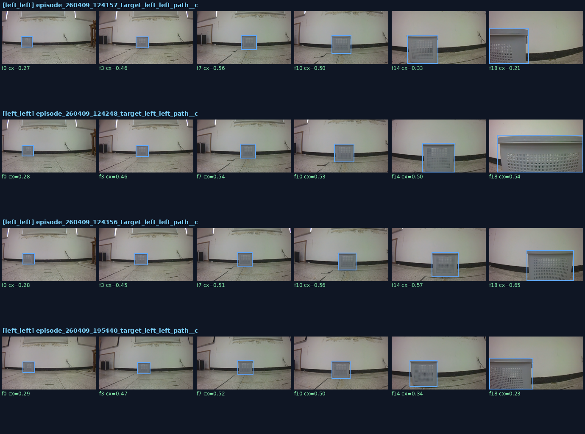
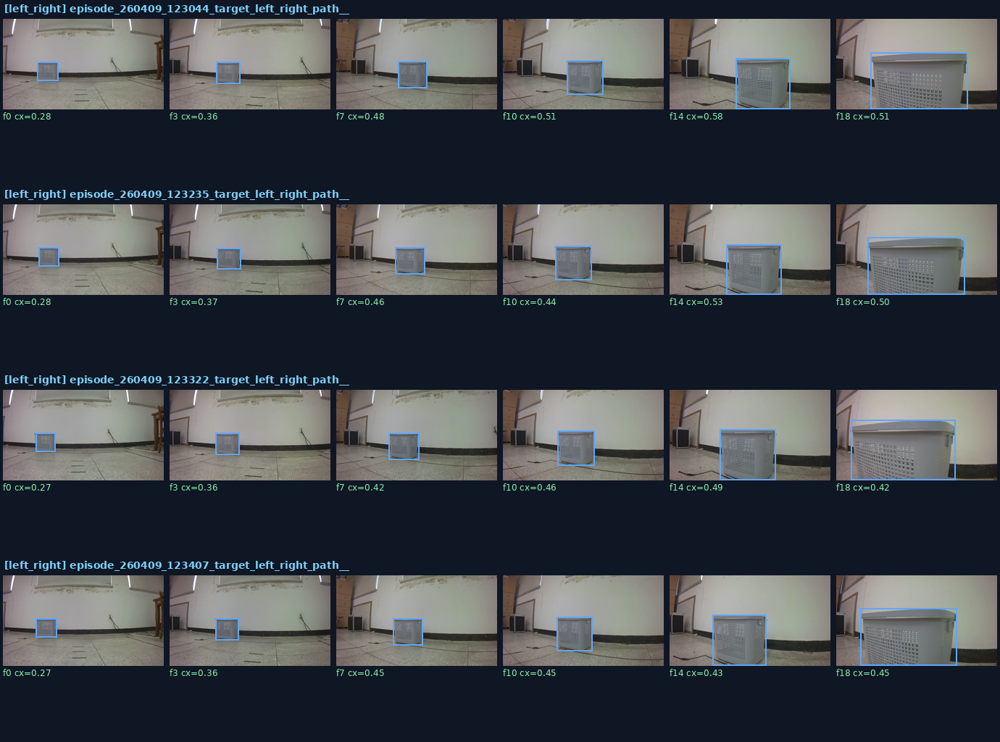
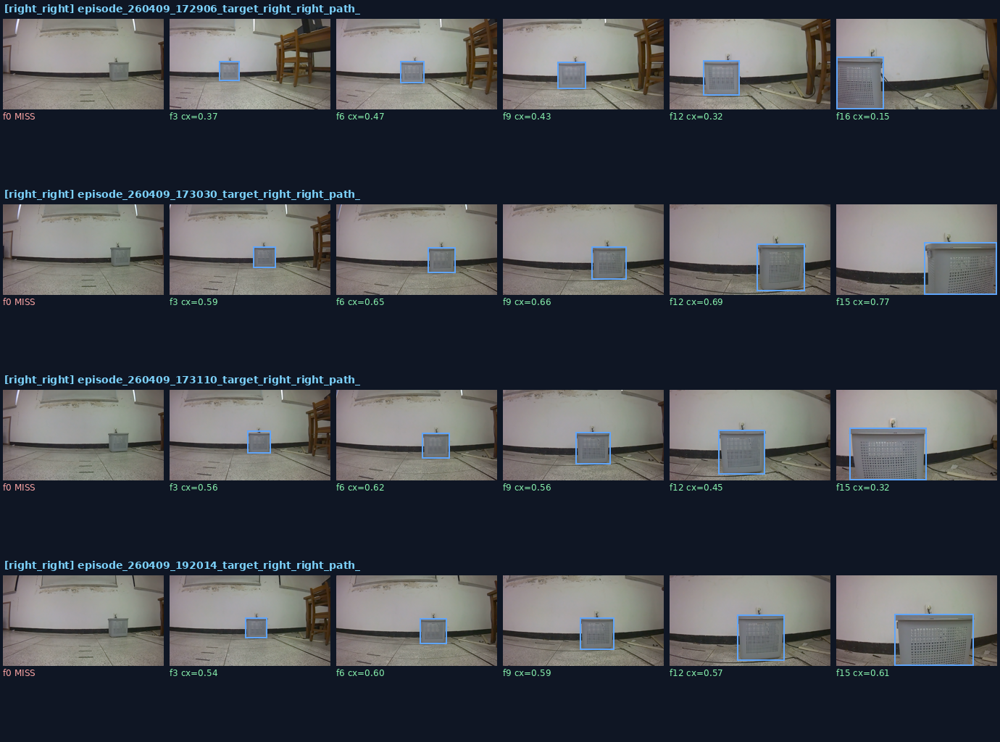
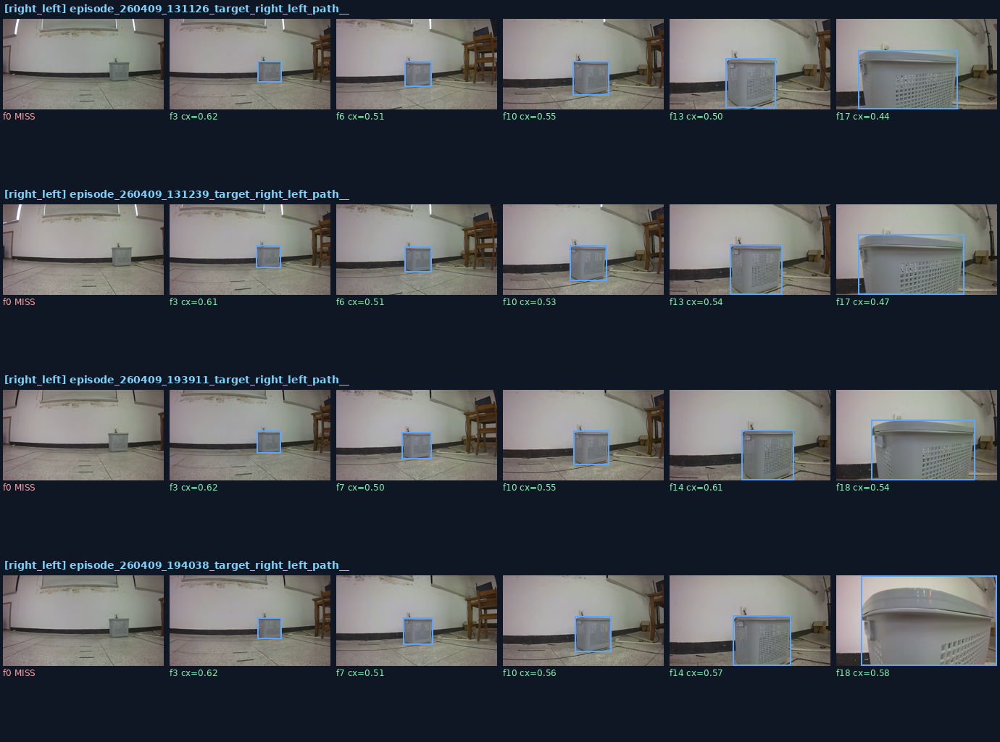

🎯 Grounding Evaluation Hub
교수님이 보신 "이상한 에피소드 · 오예측"을 grounding 관점에서 해부한다.
측면·OOD에서 base PaliGemma2가 바구니를 안정적으로 잡는다면 → 오예측은 grounding이 아닌 action head 문제다.
A 핵심 결론
✅ base PG2 — grounding 견고
측면 4경로 ~92% hit · full-frame 0%. 좌좌/우우/좌우/우좌 전 시점에서 바구니 추적. grounding은 문제가 아니다.
⚠️ LoRA들 — 붕괴/불안정
exp64(vision) full-frame 92%, exp58 OOD 오탐 27%, exp56(Kosmos) generate 사망. LoRA가 base를 못 이긴다.
→ 오예측 = grounding이 아니라 action head 문제. decomposition의 BBox grounding은 base PG2를 그대로 쓰고, 개선 노력은 action 쪽(의자 데이터 재수집 + Stage2 재학습)에 집중한다.
B 모델 비교 매트릭스 — 표준 49프레임 + 의자 11장
| 모델 | 백본 / LoRA | hit | cx_MAE | full-frame | OOD 오탐 | 판정 |
|---|---|---|---|---|---|---|
| base PG2 | PaliGemma2 / 없음 | 98% | 0.126 | 0% | 9% | ✅ 최균형 |
| pure Kosmos-2 | Kosmos-2 / 없음 | 100% | 0.123 | 0% | 100% | 바구니↑·OOD구분 제로 |
| exp57 | PaliGemma1 / LM | 84% | 0.115 | 0% | 9% | hit↓·cx정밀 |
| exp58 | PaliGemma2 / LM | 100% | 0.191 | 57% | 27% | 부분붕괴+OOD최악 |
| exp59 | PaliGemma2 / LM hard-neg | 98% | 0.129 | 6% | 0% | OOD억제 최고 |
| exp64 | PaliGemma2 / vision | 94% | 0.150 | 92% | 9% | full-frame 붕괴 |
| exp56 | Kosmos-2 / LM | 0% | — | — | — | LoRA가 Kosmos grounding 파괴 |
cx_MAE = 중심 오차(낮을수록 정확) · full-frame = area>0.9 박스 비율(높을수록 붕괴) · OOD 오탐 = 의자에 basket 박스 친 비율.
C 측면 경로 에피소드 갤러리 — base PG2, 교수님 오예측 대응
left_left (24/24)
left_right (24/24)
right_right (20/24)
right_left (20/24)




행=에피소드, 열=시간순 프레임. 파랑=정상 박스, 빨강=full-frame. cx 라벨로 위치 추적 확인. miss는 대부분 첫 프레임(원거리). 측면 꺾임에서도 full-frame 0%.
D 모델별 BBox 그리드 — 같은 8프레임, 초록=정상·빨강=full-frame
base PG2
pure Kosmos
exp57(PG1)
exp58
exp59
exp64(vision)
exp56(Kosmos)

타이트한 박스, full-frame 0%, OOD 오탐 9%.

바구니 100% 검출·full-frame 0%로 base급. 단 의자 등 미학습 객체에 100% 오탐 — negative 구분 불가.

PG1 LM-LoRA. 박스 정상, 일부 미검출(hit 84%).

PG2 LM-LoRA. full-frame 57% 부분붕괴.

hard-neg. full-frame 6%, OOD 오탐 0%로 가장 깔끔한 LoRA.

vision-LoRA. full-frame 92% 전면붕괴 (CH31/32).

Kosmos generate 사망 — 박스 없음.
E 해석 & 다음 단계
1. 측면·OOD에서 base PG2가 견고 → 오예측의 원인은 grounding이 아니다. 실주행 궤적 붕괴는 action head(조향)·action chunk·데이터 분포 쪽 문제로 좁혀진다.
2. 7개 모델 중 base PG2를 종합적으로 이긴 것은 없다. pure Kosmos는 바구니 검출은 100%지만 의자에 100% 오탐(negative 구분 불가), vision-LoRA(exp64)·exp58은 full-frame 붕괴, exp56은 LoRA가 Kosmos를 파괴. exp59만 OOD 억제(0%)라는 부분 미덕이나 cx 안정성은 더 나쁨.
2-1. LoRA의 보편적 위험: Kosmos LoRA(exp56)·PG2 vision LoRA(exp64)·PG2 LM LoRA(exp58) 모두 grounding을 악화시켰다. 소규모 데이터 LoRA가 사전학습된 grounding 표현을 망가뜨린다는 일관된 신호.
3. 결론: grounding = base PG2 고정. 다음 작업은 의자 객체 데이터 재수집 + Stage2 action 재학습으로 오예측(action)을 직접 공략.
평가 스크립트:
scripts/eval_grounding_hub.py · scripts/grounding_sideangle_episodes.py · 데이터: docs/v5/grounding_hub/hub_results.json